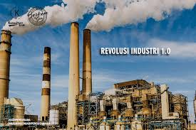

Sumber Gramedia
Revolusi Industri 1.0 (1750–1850) ditandai dengan penemuan mesin uap yang meningkatkan efisiensi produksi, terutama di sektor tekstil Inggris. Transportasi juga berkembang dengan kapal uap yang lebih andal dibandingkan tenaga angin, mempercepat perdagangan dan ekspansi Eropa.
Revolusi ini mendorong kolonialisme ke Afrika dan Asia serta meningkatkan ekonomi global, tetapi juga menyebabkan pencemaran udara dan limbah industri. Dalam dua abad setelahnya, pendapatan per kapita dunia meningkat hingga enam kali lipat, menjadikannya tonggak penting dalam sejarah industri.